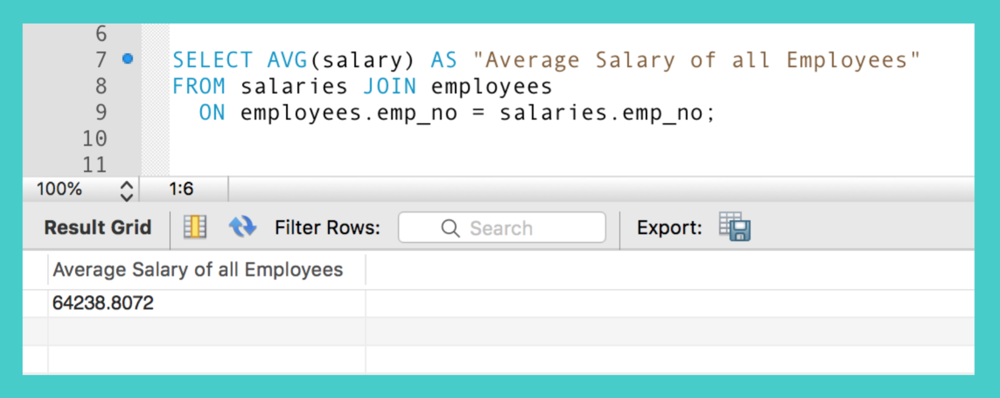
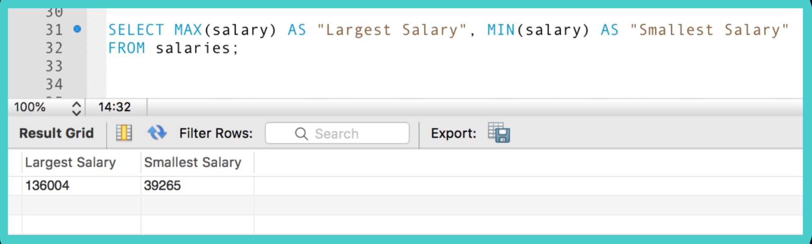
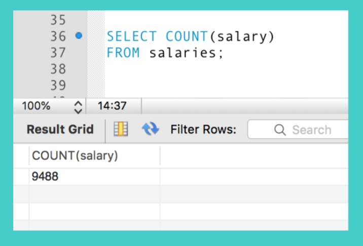
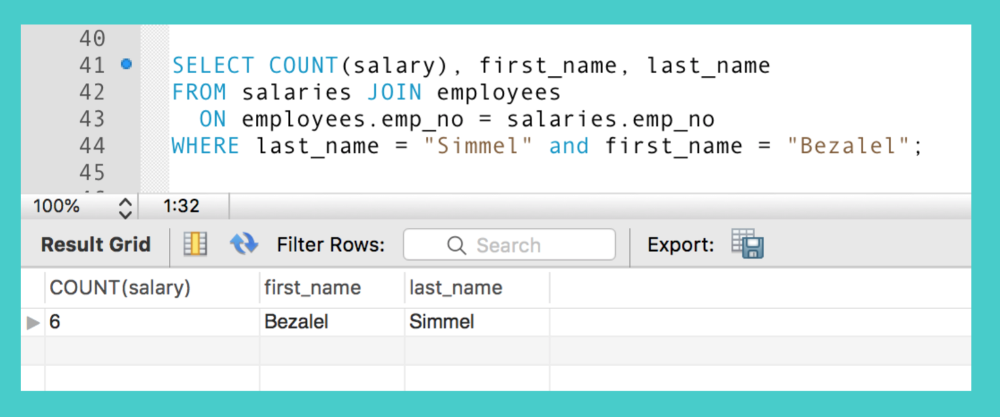
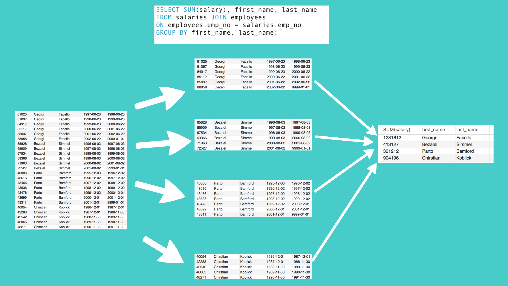
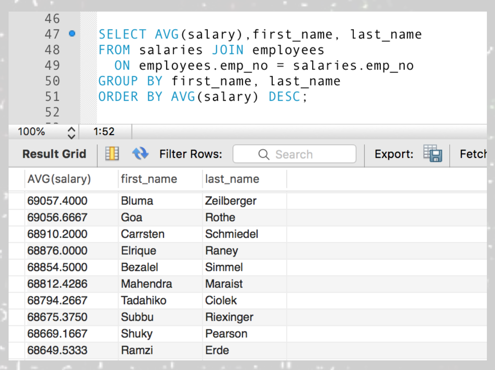
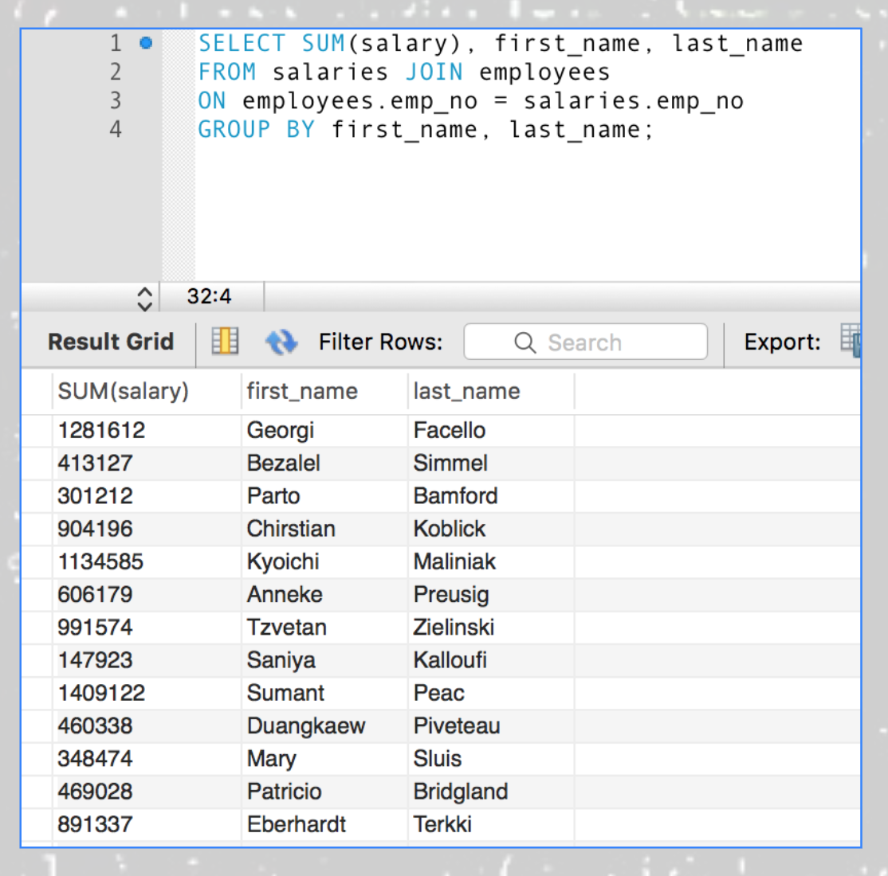
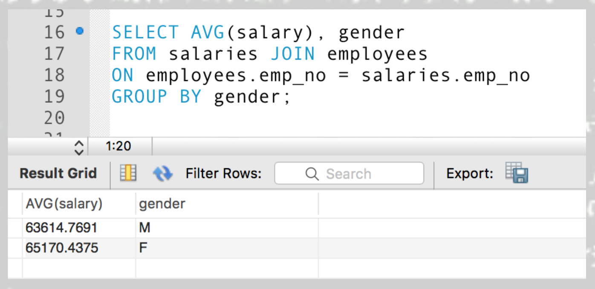
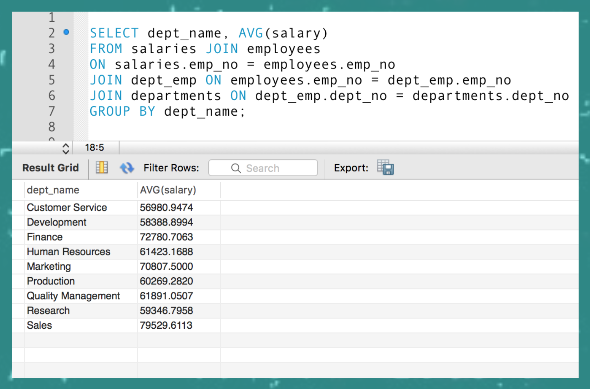
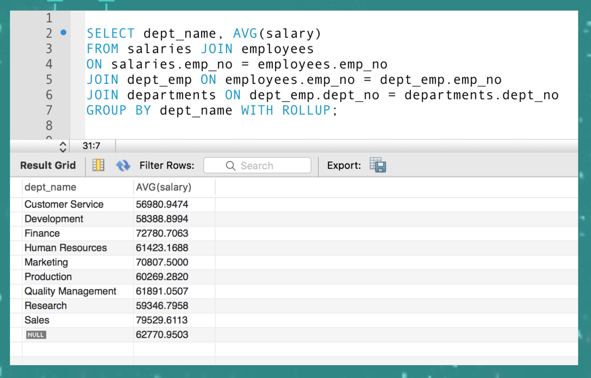

We have seen functions at work in MySQL, functions like concat, date_format, and round functions. But these functions were all scalar; functions which worked with one single value but now we are going to look at functions that work with a series of values and return one summary value; they are called aggregate functions. When a query contains one or more of these aggregate functions the query is called a summary query.
When you use the column name with these aggregate functions, it’s not referring to each and every row’s column value but the column as a whole and all the values within that column.
For example, if you ran the ROUND function in a query, it would take every value individually in each row and round that number. You still have the same number of rows in the result set, the item_price of each row is just rounded.


But with an aggregate function like AVG (or average) it works on a group of values, so it would take the original prices of each item average out all 5 items (the entire list of values in the column.
So the average of all 5 items returns one single value. The result set would look something like this once that aggregate function ran. One summary value, the average of all the rows.


Some of the more common aggregate functions are AVG, SUM, MIN, MAX, COUNT. The ALL keyword is used as default without having to actually use the syntax. That means all data in the column or group is used with the aggregate function. You can use DISTINCT if you don’t want duplicate values (this is usually used with COUNT). If there are null values in the column or group of data they are ignored by aggregate functions. Let’s see how the AVG (average) function works.
Here is just a regular query with no aggregates yet. I’m showing it so you can see what data we have in this table. Let’s say we have 1000 employees and we’ve kept track of their salaries and each time their salaries have changed over the years. And we want to find the average of all these salaries for every single person throughout all the years.

Now, we can use an aggregate function in our SELECT statement. The AVG aggregate function is used in the SELECT statement. This number takes every single value that was in the salary column for all the employees and averages them all together. So for every 1000 employees and every time their salaries changed; all those values are getting averaged together and we see the average salary is around $64,000.
Because AVG will get more decimal places than we need for monetary values you will sometimes see is used with the non-aggregate function ROUND to get it down to the right penny amount.

Notice we can’t show other non-aggregate columns like first_name or last_name because the summary information doesn’t go with any one person but a whole long group of people so non-aggregate columns would not be allowed in the SELECT with a query like this.
Let’s look at the SUM function. The SUM function adds a group of values together and returns the single total. Here is a query again with no aggregrate function in it. So it is not a summary query. Every single person and every single time range when their salary changed is represented in the result set. Notice Bezalel Simmel has had his salary change 6 times between 1996 to the 2001. Going from around 65800 to 72500.

We could use a WHERE clause to filter down the results to get just the salaries of Simmel and then the SUM aggregate function would be adding up all of his salaries (not every single employee) But it’s still a summary query. It is still taking a group of values and returning one single value for that group. In this case adding up all the 6 different salaries of Bezalel Simmel and giving us one value derived from a group of values.

The MIN and MAX functions do just as their names suggest. They are aggregate functions that return the minimum value or maximum value from a group of values. So if we were to query the salaries table and get the min and max of all the salaries we’d come up with the very largest salary of the whole list and the very smallest salary of the whole list.
The COUNT function will count how many values there are in the group of values. When we use the COUNT function on a column name such as salary then it takes the entire column of salaries and adds up how many values are in that column. In this case there are over 9000 salary values in that table column.
If we use an asterisk here we get the same results because it is counting how many rows there are in the salaries table and it is the same number as how many values were in the salary column.

We could also use a WHERE clause to get just the COUNT of all the values that result from the filter of getting just Simmel’s 6 salary changes. Since the where limits this to one person we can use the first and last name fields to show in the result set.
Now that we have an idea of how aggregate functions work, we can group our data into groups and then run the aggregate functions on those groups to summarize the information into useful areas. In this query there is a new GROUP BY statement. This will take the data in the table and group it together first (in this case by first and last name, and then allow the aggregate function of SUM to run on the groups.
So from our table data, the GROUP BY separates the data out into groups. In our case that is by first and last name. So all the Facello’s data, Simmel’s data, Bamford’s data, and Koblick’s data are grouped separately. That is how we told it to group it was by name.
Then in those individual groups the aggregate function will run which sums or adds up all the amounts in those groups and each group will get it’s own row in the result set. A row for Facello, Simmel, Bamford and Koblick. But the aggregate function still worked on a number of different values but those values were grouped by first and last name first, then summed up by that group.
So here we want to the average of not only Bezalel Simmel (like we saw before) but everyone’s average salary over every time period. We could use an aggregate function of AVG (average) and it wouldn’t get the average of everyone, but first it would see the GROUP BY clause that groups the data into lists of values that fit under that category first and then run the aggregate function on those groups (in this case by first and last name). So for every single person it would look at all the salary changes they might have had (for Simmel that was 6) and it would have averaged out those values and then since we have added first and last name to the SELECT statement we could see what average goes with what person in our result set. You can only use non-aggregate column names like this if you were already using them in a GROUP BY statement.
Here is the SUM function again, adding up all the values after it groups the data into employees by first and last name. We can see the 6 times Simmel had his salary changed, those values are added up together as it did before but now every employee also has their values added up as well because we are using the GROUP BY statement.
Here is an other query with GROUP BY. This time we are grouping by gender not last and first name. We can see the average salary for different genders here. You can see how many cool ways you can group the data and get super useful information for our users.
The HAVING clause works with the GROUP BY clause. The HAVING clause has a similar purpose to WHERE clauses in that it will filter our results if certain conditions are true. But the HAVING clause specifies a search condition for a group or aggregate. Once the data is grouped by the GROUP BY it then is filtered according to the HAVING clause.
The employees were grouped by name again and then the average of each employee was averaged out. Then the HAVING clause filtered out anyone with a salary average of less than 68000. So instead of all 1000 employees showing only 308 and their average salaries are included in the result set. They are the only ones with average salaries of over 68,000.

Remember HAVING works after the data is grouped. Don’t confuse that with the WHERE clause. The WHERE clause filters out data even before it is grouped. The query on the left shows the result set of a query using a HAVING clause. The one on the right shows a query with a WHERE clause. Even though the WHERE clause is filtering also by salary over 68000 the salaries are filtered out even before it’s grouped. Also it isn’t filtering by the average salaries but each individual salary before it’s even grouped or averaged. Also note that you can’t use an aggregate function in a WHERE clause. WHERE clauses can only refer to columns in the tables. But it can refer to a column even if it’s not listed in the SELECT list. HAVING clauses can only refer to columns or aggregate functions that are included in the SELECT clause but HAVING clauses can use aggregate functions. Yes, lots of information here, but super cool how it works. So again you can’t use an aggregate function as part of a WHERE clause. HAVING clauses can only refer to a columns or aggregate functions that are in the SELECT clause, but they can use aggregate functions.
The ROLLUP operator is an extension of the GROUP BY clause. It will summarize data within groups on it’s own separate line. Here’s a summary query that is summarizing the average salary by department. No roll up is included on this one.
Now let’s add ROLLUP. With the query on the left here, if we add WITH ROLLUP to the end of the GROUP BY clause, we see not only the averages of each department, but the average of all groups on the last line. The null is there because a group of text (or string) values can’t be summarized.
The next summary query, on the right, is the same except we are getting the sum of the salaries not the average. So the ROLLUP summary row shows all the sums of each department added up on the last row.

If you use ROLLUP with a GROUP BY that is using 2 columns then you get a summary row for each sub group as well. so there is an extra row under each department summarizing the two values of male and female. And at the very bottom there is still a summary row for the entire result set as well.